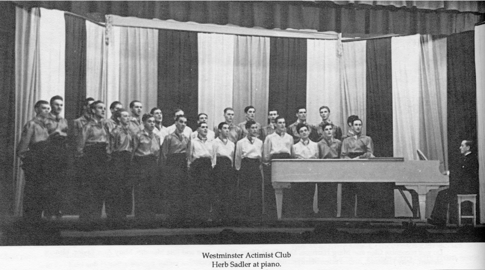
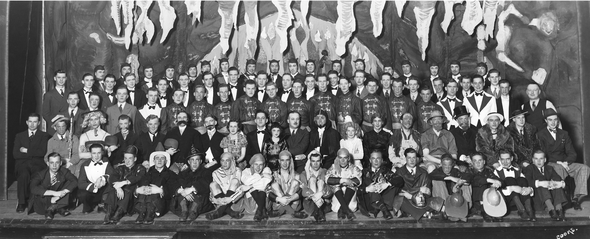

-1-MasterItem.svg)
Stories of Westminster United Church & its People / Page
140
Activities initiated by the Club included sports, public speaking, a Glee Club — under the
leadership of Herb Sadler — and an orchestra. The most well known of their activities was their
Actimist Annual Review, started in 1932 and held each May for four night runs in
the old Dominion
Theatre (a performance space located a few doors east of Jimmie's Coffee Shop,
Portage and Main.
The Dominion is also remembered as the first home of Manitoba Theatre Centre.
Director John Hirsch
called it Theatre 77 (77 foot steps from the corner). (Oh, and Jimmy Goundry was
a personal friend
of my father!)
The Actimist Club continued to serve a useful purpose in young men’s lives till 1947. Post-war,
and a new era. Below are two pictures; the 1st of The Glee Club under Herb
Sadler’s direction
and the 2nd a group shot of The Westminster Actimist Review of 1938.
The second picture speaks volumes as to the success the Club achieved in
attracting members.
By the way; the name of the club is a marriage of the two words ‘active’ and ‘optimist.’


Camps and Clubs